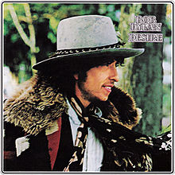

Desire

Released: January 5, 1976
Length: 56:13
Producer: Don DeVito
Label: Columbia
Side 1
Hurricane
Isis
Mozambique
One More Cup of Coffee (Valley Below)
Oh, Sister
Side 2
Joey
Romance_in_Durango
Black Diamond Bay
Sara